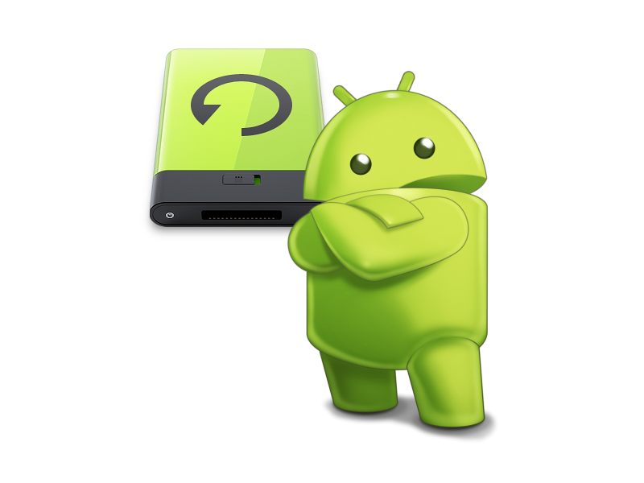
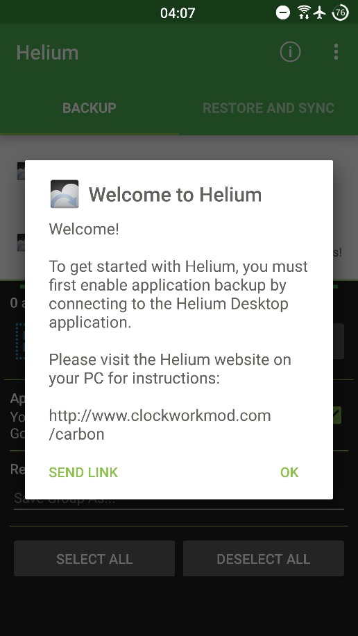
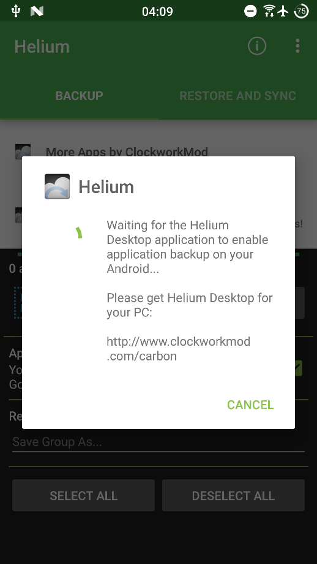
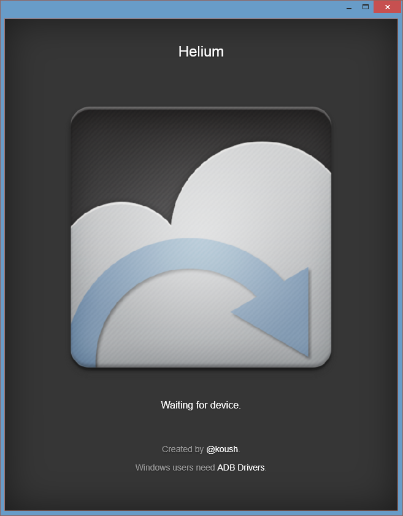
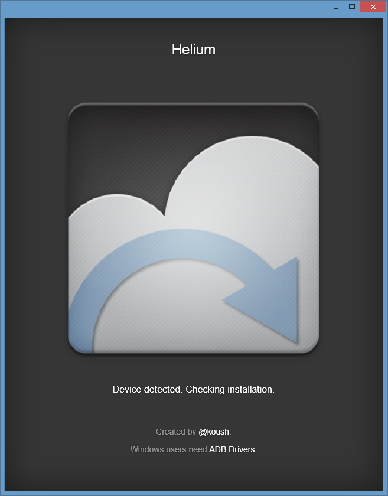
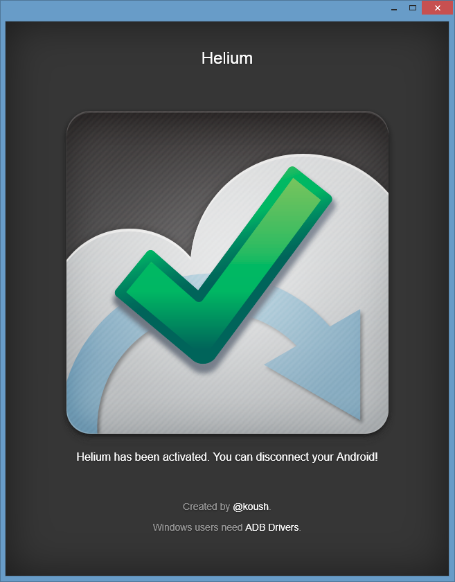
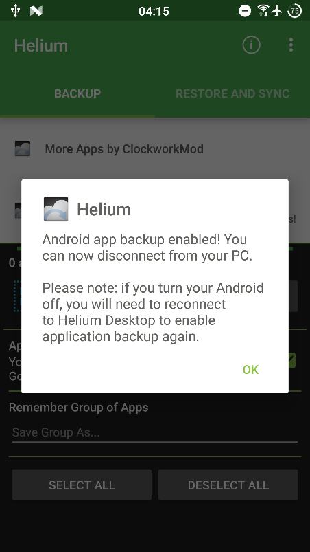

Android Backup and Restore guide for Non-Rooted Devices
Intro
Android backup and restore process might be a little bothersome and somewhat complex. I'll try to simplify this process for you, and guide you through it. We will focus of the backup and restore process of single Android apps.
As the title states, no root is needed. For that, we will use adb or Helium app.
I'm using Windows platform, but this guide should work or any other platform.
Getting Start
We will start by installing adb and Helium app - at least one of them is needed for backing up and restoring apps.
Installing and using adb
Android Debug Bridge (adb) is a versatile command-line tool that lets you communicate with a device. The adb command facilitates a variety of device actions, such as installing and debugging apps, and it provides access to a Unix shell that you can use to run a variety of commands on a device
Getting adb working on your machine:
- Get adb (From android developers site or direct link)
- Enable debugging mode on your phone (How?)
- Install Google USB Driver if you haven't got them installed (How?)
- Open cmd and navigate to the adb file location.
- Run adb devices and make sure that your device is listed:
- Now adb should be working.
{kind=link}
{kind=link}
{kind=link}
{kind=link}
Installing and using Helium app
Helium is the missing app sync and backup solution for Android. Helium does NOT require root. All Android users can use Helium to backup and sync Android applications.
Helium app is not enabled when first installed on your phone. In order to enable it, one must connect the phone to a computer and run one of Helium's desktop apps. Those desktop apps enables the app that is installed on the phone. Once enabled, the Helium app will function properly until the phone is rebooted (and then the app should be enabled again).
We will use Chrome to enable the app. You may choose other platform as well from here
Enable Helium Android app:
- Make sure that adb is set up and running, and that your phone is listed under adb devices.
- Install Helium on your phone (from Google Play or direct link)
- Install Helium on Chrome browser (from Chrome Web Store or direct link)
- Connect your phone to your computer.
- Launch Helium app on your phone and press OK: 
- Helium will now wait for the computer: 
- Open Chrome, navigate to chrome://apps and open Helium Backup.
- Now Chrome's Helium Backup will open: 
- Now Chrome's Helium Backup will try to detect your Phone: 
- Now Chrome's Helium Backup is ready to use: 
- Go back to your phone, and press OK: 
- Now Helium should be working, and you may unplug your phone from the computer.
{kind=link}
{kind=link}
{kind=link}
{kind=link}
{kind=link}
{kind=link}